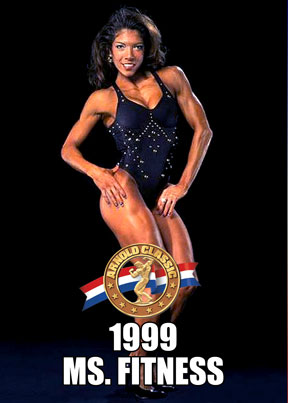

Fitlife - Aparate fitness si echipamente pentru aerobic
Fitlife
MENIU Recomandari Forta Aparate fitness multifunctionale Aparate fitness individuale Aparate recuperare medicala si kinetoterapie Banci fitness antrenament Greutati fitness Gantere Kettlebells Discuri si bare Seturi Diverse Suporturi Suport gantere Suport discuri si bare Suport mingi Suport saltele Accesorii fitness Cardio Benzi de alergat Biciclete fitness Aparate de vaslit Stepper / AMT Aerobic Steppere aerobic Saltele fitness Mingi fitness Extensoare si benzi elastice Greutati pentru aerobic Accesorii Yoga Accesorii si suporturi Functional training Coarda de sarit Coarda de suspensie Cutie pliometrica Minge crossfit Veste, greutati incheteuri, saci nisip Bara tractiuni usa sau perete Articole echilibru Flexor pentru maini Accesorii masaj Obstacole fitness Manere flotari Roata abdomene Accesorii crossfit DIVERSE Smart Shake Medical Orteze Compresie musculara Electrostimulare Casti fitness Curatare si intretinere Lenjerie sport Accesorii fotbal Accesorii lupte REDUCERI Resigilate Lichidari de stoc
Contact : 0737 307 370 L-V: 9-17
Contact : 0737 307 370 L-V: 9-17
Contul meu Lista mea de preferinte Finalizare Comanda Autentificare Cosul Meu 0Nu ai articole in cosul tau de cumparaturi.
Like us on Aboneaza-te la newsletter! MENIU Recomandari Forta Aparate fitness multifunctionale Aparate fitness individuale Aparate recuperare medicala si kinetoterapie Banci fitness antrenament Greutati fitness Gantere Kettlebells Discuri si bare Seturi Diverse Suporturi Suport gantere Suport discuri si bare Suport mingi Suport saltele Accesorii fitness Cardio Benzi de alergat Biciclete fitness Aparate de vaslit Stepper / AMT Aerobic Steppere aerobic Saltele fitness Mingi fitness Extensoare si benzi elastice Greutati pentru aerobic Accesorii Yoga Accesorii si suporturi Functional training Coarda de sarit Coarda de suspensie Cutie pliometrica Minge crossfit Veste, greutati incheteuri, saci nisip Bara tractiuni usa sau perete Articole echilibru Flexor pentru maini Accesorii masaj Obstacole fitness Manere flotari Roata abdomene Accesorii crossfit DIVERSE Smart Shake Medical Orteze Compresie musculara Electrostimulare Casti fitness Curatare si intretinere Lenjerie sport Accesorii fotbal Accesorii lupte REDUCERI Resigilate Lichidari de stoc TRANSPORT GRATUIT PESTE 500 DE RON.Fitlife - Aparate fitness si echipamente pentru aerobic
APARATE MULTIFUNCTIONALE
APARATE DE VASLIT
BICICLETE FITNESS
BENZI DE ALERGARE
GANTERE
DISCURI SI BARE OLIMPICE
BENZI ELASTICE
Promotii
-32%Caramida yoga din spuma densa, DY-EM-216, Dayu Fitness
17,00 RON
25,00 RON
-21%Covor antiderapant pentru stepper 100 x 45 cm Sveltus
23,00 RON
29,00 RON
-16%Set gantere aerobic vinil 0,5 - 5 kg SVELTUS
Price From:
37,00 RON
44,00 RON
-43%Parasuta antrenament viteza, DY-PS-01, Dayu Fitness
43,00 RON
75,00 RON
-33%Set de 3 mingi motricitate, 464, Sveltus
44,00 RON
66,00 RON
-41%POWER BAND - banda elastica de antrenament
Price From:
46,00 RON
78,00 RON
-169 LEIKettlebells de competitie 8-24 kg DY-KD-215
Price From:
190,00 RON
359,00 RON
-98 LEICoarda elastica viteza 250-500 cm Dayu Fitness
198,00 RON
296,00 RON
-228 LEIFranghie antrenament GYM ROPE
Price From:
260,00 RON
488,00 RON
1 Comentariu (i) -132 LEIThe Original - Stepper aerobic ajustabil pe 3 niveluri
399,00 RON
531,00 RON
-237 LEIKIT PUMP 20 kg Dayu Fitness
469,00 RON
706,00 RON
-2542 LEIAparat de vaslit WaterRower A1 Home
6.675,00 RON
9.217,00 RON
Vezi toate promotiileRecent adaugate
Nou -37%Inel Yoga, YJH006, Hiperlion
12,00 RON
19,00 RON
NouBanda elastica Power Band, latex, ZLD005, Hiperlion
Price From: 16,00 RON Nou -45%
Extensor fitness cu 5 corzi elastice si manere
27,00 RON
49,00 RON
Nou -22%Coarda de sarit 2.75 m, TheWay Fitness
29,00 RON
37,00 RON
Nou -29%Banda de rezistenta multifunctionala, LLQ014, Hiperlion
32,00 RON
45,00 RON
Nou -45%Bara fitness cu corzi elastice, YJB001-1, Hiperlion
33,00 RON
60,00 RON
Nou -25%Inel pentru pilates, yoga YJH007, Hiperlion
36,00 RON
48,00 RON
Nou -26%Aparat abdomen Ab Roller cu benzi elastice, AB007, Hiperlion
39,00 RON
53,00 RON
Nou -38%Bara fitness cu corzi elastice ajustabile, YJB001-2, Hiperlion
40,00 RON
65,00 RON
Nou -27%Aparat abdomen cu 3 roti, Hiperlion
44,00 RON
60,00 RON
Nou -26%Set 3 benzi elastice pentru coapse si fese
65,00 RON
88,00 RON
Nou -26%Roata yoga 33 cm, YJL001, Hiperlion
66,00 RON
89,00 RON
Vezi toate produsele recenteProducatori
Ultimul articol de pe blog
Noutati de pe blog
5 EXERCITII PENTRU UN CORP TONIFIAT, GATA DE PLAJA
Publicat pe: 28 Iunie 2021Dacă vrei să scapi de stratul de grăsime care acoperă mușchii și să-ți definești structura musculară, trebuie să. [citeste tot]
Videoclipul saptamanii
CONTACTEAZA-NECompania
Despre noi Noutati si evenimente Distribuitori Sali de fitness ATSUtile
Regulament program fidelizare Politica de cookies Termeni si conditii Politica de confidentialitate Livrare si plata Politici de retur ANPC Fitlife - Pasiune pentru sportFolosim cookie-uri pentru a-ti putea oferi cea mai buna experienta de navigare pe site-ul nostru. Poti afla mai multe sau le poti dezactiva in setarile browser-ului.
Accepta Afla mai multe